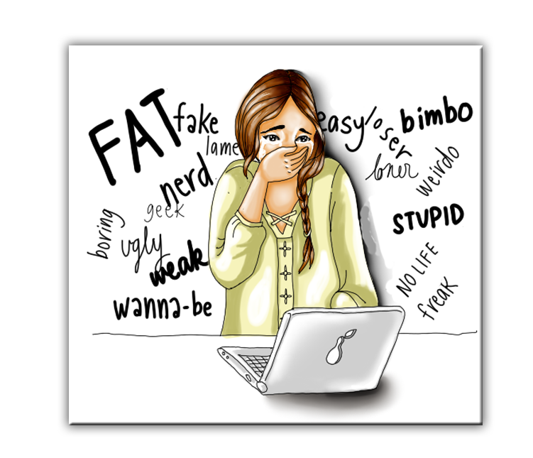

|
1.No contestes a las provocaciones, ignóralas.
2.Cuenta hasta cien y piensa en otra cosa.
3.Compórtate con educación en la Red.
4.Usa la Netiqueta.
5.Si te molestan, abandona la conexión y pide ayuda.
6.No facilites datos personales. Te sentirás más protegido/a.
7.No hagas en la Red lo que no harías a la cara.
8.Si te acosan, guarda las pruebas.
9.Cuando te molesten al usar un servicio online, pide ayuda a su gestor/a.
10.No pienses que estás del todo seguro/a al otro lado de la pantalla.
11.Advierte a quien abusa de que está cometiendo un delito.
12.Si hay amenazas graves pide ayuda con urgencia.

|